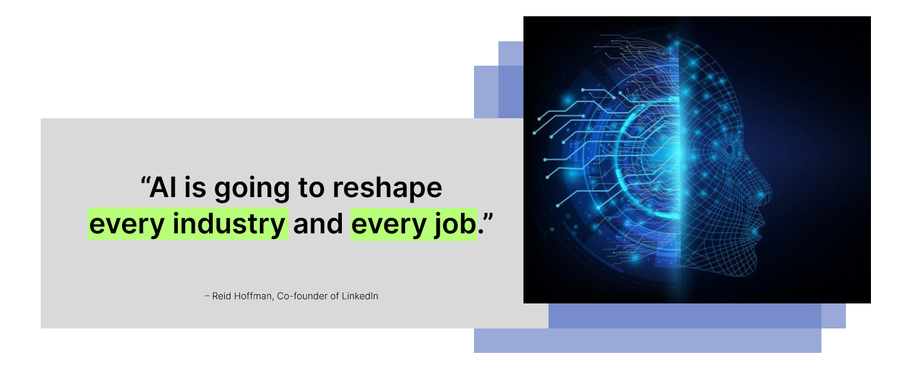

Information.

Fundamental Concepts of
Artificial Intelligence
Machine Learning
Machine learning is a branch of artificial intelligence in which systems are trained on data to identify patterns and make decisions, rather than being programmed with explicit rules. A model is exposed to large volumes of examples, from which it extracts statistical relationships that can be applied to new, unseen inputs. It forms the basis of most modern AI applications, including recommendation systems, fraud detection, and predictive analytics.
Deep Learning
Deep learning is a subset of machine learning that uses artificial neural networks composed of many sequential layers to process data. Each layer transforms its input and passes the result to the next, allowing the network to learn increasingly abstract representations of the data. This architecture enables models to handle high-dimensional inputs such as images, audio, and text, and it is the underlying approach behind most state-of-the-art AI systems in use today.
Language Processing
Language processing is a field of artificial intelligence that focuses on the interaction between computers and human language. It involves the development of algorithms and models that can understand, interpret, and generate natural language text or speech. This technology is used in various applications such as machine translation, sentiment analysis, and chatbots.
Explore Artificial Intelligence bots: